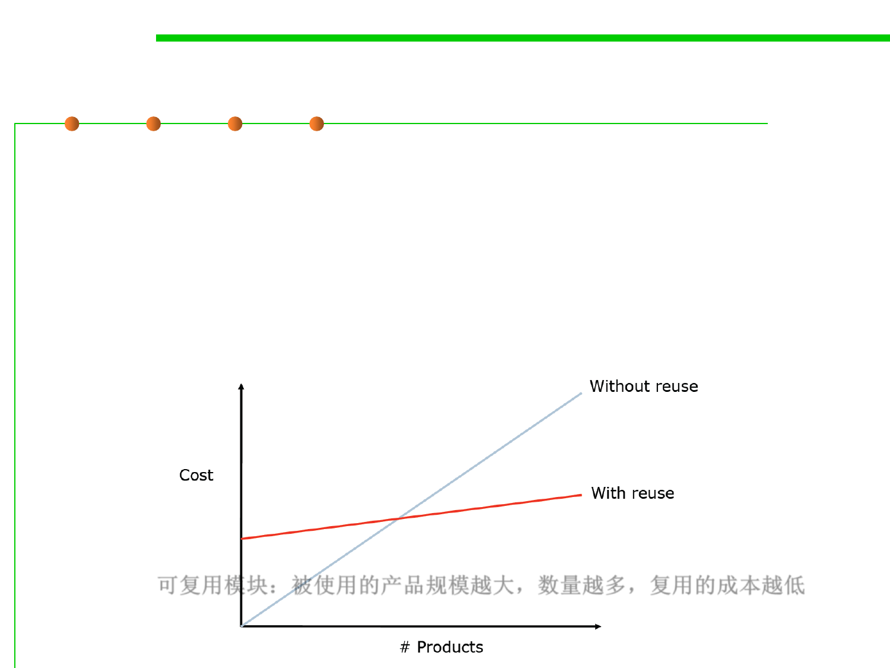

Reuse costs
5.1 Metrics, Morphology and External Observations of Reusability
▪ Reusable components should be designed and built in a clearly
defined, open way, with concise interface specifications,
understandable documentation, and an eye towards future use.
▪ Reuse is costly: it involves spans organizational, technical, and
process changes, as well as the cost of tools to support those
changes, and the cost of training people on the new tools and
changes.
可复用模块：被使用的产品规模越大，数量越多，复用的成本越低